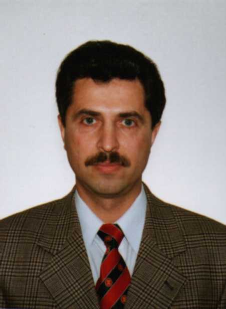

| 
por Serge Lozovsky Sobre el Author: Veinte años de experiencia en Sistemas de Información como programador/administrador en total. 5 años en tecnología internet, 9 años en UNIX, 4 años en Inteligencia Artificial (conocimiento y representación de datos). Contenidos: |
Resumen:
Serge Lozovski presenta un paquete de software el cual diseñó para hacer los sistemas UNIX más seguros. Este software está disponible bajo una licencia no-libre. Lo pueden utilizar sin costo para propósitos educacionales no comerciales.El problema más grande con la seguridad en UNIX es que el superusuario puede hacer con el sistema cualquier cosa que el quiera. Hay programas (demonios) que trabajan con privilegios del superusuario, por ejemplo popd osendmail, y son accesibles desde la red (Internet/Intranet). Dentro de esta pueden existir bugs en cualquier programa, así que los intrusos se conectan al programa vía la red, aprovechándose así de todos los errores existentes y tomar de esta forma tomar el control de todos los hosts.VXE(Virtual eXecuting Enviroment, Ambiente Virtual de Ejecución) protege servidores UNIX de estos intrusos, ataques de crackers desde la red entre otros. VXE protege los subsistemas.Así, VXE soluciona el problema siguiente: protege a los hosts y subsistemas particulares, los cuales trabajan en modo superusuario y donde los mismos pueden tener una serie de bugs. Este es un problema que se presenta en la vida real.
Un ambiente virtual de ejecución como el que proporciona VXE protege al host y subsistemas particulares los cuales trabajan en modo superusuario y donde estos pueden presentar bugs en sus programas. Cuando el programa trabaja en modo superusuario, este puede acceder a todos los recursos del sistema operativo. VXE crea un ambiente virtual para cada subsistema.
Dentro de este ambiente, solamente los recursos necesitados para la operación normal del sistema son visibles y están disponibles para el subsistema. El subsistema soporta (apoya) el programa de inicio y todos los subprocesos iniciados (bifurcados) por este. Cualquier subproceso corre en el mismo VXE como el padre. Para atender cualquier requerimiento del sistema, el programa usa llamadas al sistema operativo (syscalls). VXE tiene arbitrio para describir que llamada del sistema atender y con que parámetros está disponible para cada subsistema. Por ejemplo, este puede ser descrito (para llamadas al sistema de operación de archivos) que algunos archivos son leíbles y algunos ejecutables, las operaciones de la red no disponibles (en caso del servidor POP-este maneja conexiones a la red, pero no crean nuevas conexiones), y estas restricciones no pueden ser violadas por ningún programa con privilegios de superusuario.
Estas restricciones pueden estar listas mientras sean necesitadas. Si un intruso obtiene el control de cada uno de los subsistemas, no podrá utilizar métodos ordinarios para olfatear información o afectar el sistema. El puede hacer cualquier cosa en teoría usando métodos sofisticados, -esto para afectar la operación del sistema violado, pero no el sistema operativo en si mismo, ni otros subsistemas. Aquí los métodos ordinarios son aquellos donde un intruso toma el control de los privilegios del superusuario y ejecuta comandos del shell (intérprete) y demás utilidades de uso ordinario como un editor de texto entre otros más. El no puede hacer nada sin estas utilidades. Por ejemplo, un servidor POP no necesita un editor de texto y la utilidad copiar para realizar su trabajo, así que allí no esta tal programa en ambiente VXE, creado para protección del POPD.
Más específicamente, VXE protege el sistema y sus subsistemas desde la interferencia del subsistema violado (al cual trabaja bajo el control de VXE). Así también, proporciona protección a los subsistemas en si (en la forma como se describió anteriormente). Para mas sencillo de comprender, en el siguiente texto se describirá ese subsistema de protección VXE.
La descripción VXE (VXED) es un pequeño programa elaborado el LISP (un conjunto de funciones) el cual usa una descripción declarativa de parámetros aceptables para diferentes llamadas al sistema. Este VXED es cargado por el kernel (núcleo) donde este controla los parámetros de llamadas al sistema desde el subsistema especificado. Así, VXED es un conjunto de módulos dinámicos cargables, manejados por un pequeño intérprete LISP insertado en el kernel. La versión actual de VXE contiene vxelisp, derivado de RefLisp (de Bill Birch, bbirch@ctp.com). vxelisp contiene una nueva representación de cadena larga, soporta un gran numero de cadenas (strings) y otras cuantas funciones. La versión del kernel de vxelisp está por venir, la cual permitirá manejar diferentes VXEDs simultáneamente.
Existen dos métodos para activar VXED. De manera explícita y de manera implícita (automática). La activación explícita se da mediante el uso del programa VXE. Los parámetros son: el nombre de la ruta del VXED, la ruta y parámetros del ejecutable, los cuales serán ejecutados con sus respectivas restricciones. Para el método automático, la utilidad vxed pre-carga todo lo que necesita VXED dentro del kernel. Cada VXED tiene un patrón de activación. Durante el inicio del programa (ejecutable), el kernel verifica la ruta del ejecutable contra los patrones y posteriormente VXED es activado. Este método puede ser usado para activar la protección al inicio del cualquier programa en un directorio especificado (y todos sus subdirectorios). Por ejemplo, para proteger scripts CGI elaborados por usuarios, VXED puede estar definido para cada subdirectorio de usuario.
Cualquier VXED sofisticado puede ser creado manualmente usando el gran poder de vxelisp. Pero sin embargo, VXE no puede forzar a los administradores a aprender a utilizar LISP. Uno puede pensar acerca de VXE como un sistema de auto-aprendizaje. El sistema de desarrollo de VXE (llamado DS) ejecuta VXE en modo trazado.
Cabe destacar que como en otro tipo de servicios, la creación y modificación de VXED es dada vía una interface WWW.
El sistema de desarrollo soporta dos tipos de VXED. Tipo estricto y tipo sistema de archivos. VXED estricto describe explícitamente todas las llamadas al sistema permitidas. VXED sistema de archivos describe los permisos de lectura, escritura y ejecución para una ruta definida. Las restricciones especificadas aplican a las llamadas al sistema del sistema de archivos, todas las demás llamadas al sistema son permitidas. Después de que VXED ha sido creado para un subsistema particular, este trabaja en modo suave. En este modo todas las violaciones de VXED están registradas, pero las llamadas al sistema están ejecutadas. VXE DS puede respaldar VXED automáticamente, usando la información registrada.
Seguramente, cualquier cambio que necesite hacerse al VXED, puede realizarse usando el editor VXED. Las violaciones pueden ser causadas por la actividad de un intruso o por el comportamiento de los subsistemas en ciertas circunstancias. El administrador VXE revisa el registro con la ayuda del DS y toma una decisión en cuanto a si un respaldo es razonable. Si no hay violaciones entonces el VXED puede ser cambiado al modo producción. En este modo, las violaciones son registradas y las llamadas al sistema son bloqueadas. Una vez más, el registro puede ser usado para la detección de intrusos o para la afinación del VXED.
Por razones de seguridad, todas las acciones de control sobre VXE pueden ser hechas solamente por el superusuario y fuera de cualquier VXE
VXE afecta el desempeño de la siguiente forma. Si el programa corre fuera de cualquier VXE, cualquier llamado al sistema ejecuta dos instrucciones montadas (verifica si VXE esta en efecto por un proceso actual, y salta si no es así). Para cualquier llamada al sistema de un ejecutable, una pequeña subrutina en lenguaje C verifica si hay algún correspondiente VXED aún disponible en el núcleo. Para programas que corren en VXE, unas cuantas lineas de código C determinan si la verificación del parámetro es necesaria. Algunas llamadas al sistema pueden ser señaladas en VXED como no-verificables (por ejemplo, señalar por default las operaciones de lectura y escritura). Así, solamente el resto de las llamadas al sistema son verificadas por algunas funciones LISP. Estas funciones están localizadas dentro de VXED y pueden ser fácilmente observadas por el administrador.
SoporteVXE en: vxe@intes.odessa.ua
Página Web de VXE en: http://www.intes.odessa.ua/vxe
|
Contactar con el equipo de LinuFocus
© Serge Lozovsky LinuxFocus 1999 |
Translation information:
|
1999-11-07, generated by lfparser version 0.6